116 verified new places · 45 states in this batch · 115 profiles photographed · 140 selected photos
Checked October 27, 2026. Current operator visitor addresses are retained. Public map points use exact Census street/address matches or separately documented government records. Shared-brand product photos are labeled as products, not branch interiors. Photos are retrieved at the user’s request; source attribution does not establish a reuse license.
Euphoric Herbals Apothecary - Milford
Bulk herbs, loose-leaf teas, and a smoothie bar in Milford.
Euphoric Herbals operates a public apothecary on North Dupont Boulevard in Milford. The shop carries bulk botanical ingredients, loose-leaf teas, extracts, and natural body care products.
Visitors can also order plant-based smoothies and teas from its in-store bar. Check the latest store hours before visiting.
621 N Dupont Boulevard Milford, Delaware 19963 302-491-4443 Check current shop hours with the store.
Official operator site verifies public shop address, herbal inventory, and visitor access; checked 2026-10-27.
Euphoric Herbals founder at the apothecary counter alongside a close-up of botanicals · Photo source
Gaia Emporium is a Newark shop offering its own herbal tea blends alongside crystals and related wellness products. Founders Elaysia and Ian combine herbal interests and crystal craftsmanship in the business.
The shop publishes regular visiting hours on Peddlers Row and also hosts in-person tea and sound events. Sunday visits are by appointment.
19B Peddlers Row Newark, Delaware 19702 302-379-0215 Monday and Thursday–Saturday 10:30am–5pm; Sunday by appointment.
Official operator site verifies public shop address, herbal inventory, and visitor access; checked 2026-10-27.
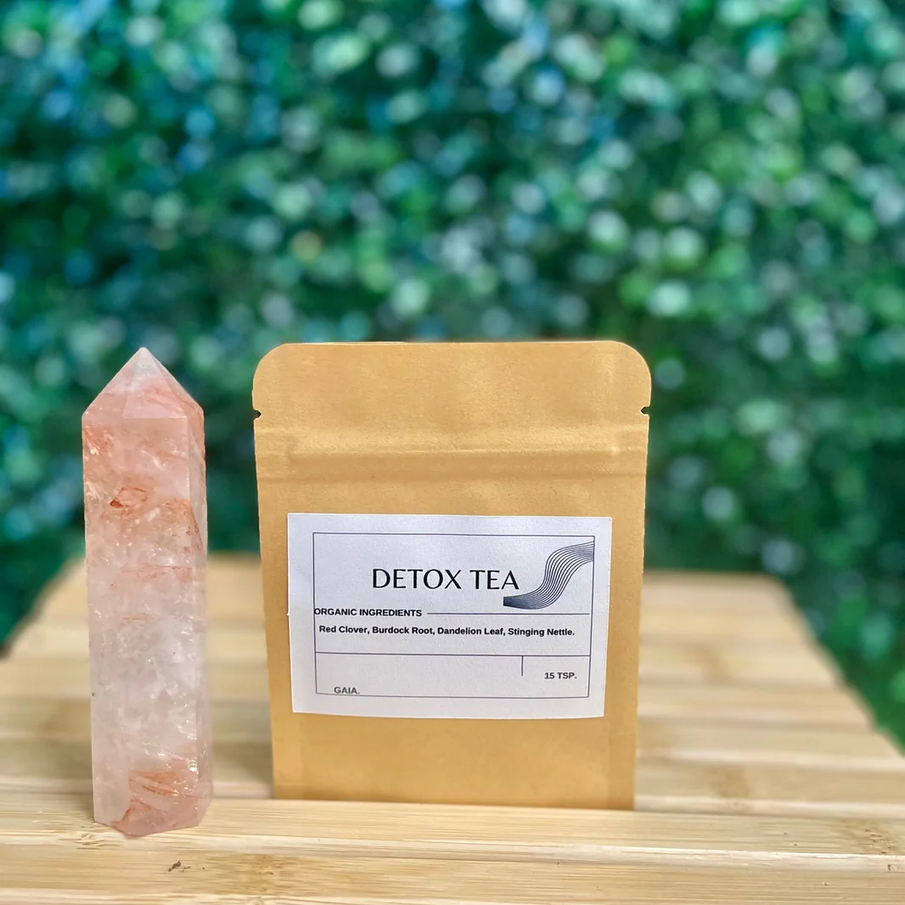
Gaia Emporium herbal tea pouch photographed beside a rose quartz crystal · Photo source
The Spice Shack is a family-owned shop in Grabill, near Fort Wayne. Its more than 200 bulk items include medicinal and culinary herbs, spices, blends, and loose-leaf teas.
Visitors can shop in person during the published opening hours. Custom quantities smaller than a pound can be arranged directly with the shop.
Good Earth Natural Food Co. is a family-owned Indianapolis store founded in 1971. Alongside natural groceries, supplements, and body care, it sells bulk herbs, spices, and teas.
The store offers smaller amounts of its bulk items on request and has a dedicated contact line for its herb department.
Little Woods Herbal is a family-owned tea and spice shop in downtown Ames. Its shelves include bulk herbs, spices, loose-leaf teas, and original botanical blends.
Visitors can browse apothecary supplies and herb books, or order brewed tea at the tasting bar.
136 Main Street Ames, Iowa 50010 515-233-3838 Monday–Wednesday 10am–5pm; Thursday–Friday 10am–6pm; Saturday 10am–4pm; Sunday closed.
Official operator website publishes a public retail location and shop hours; photo visually reviewed against the official source page.
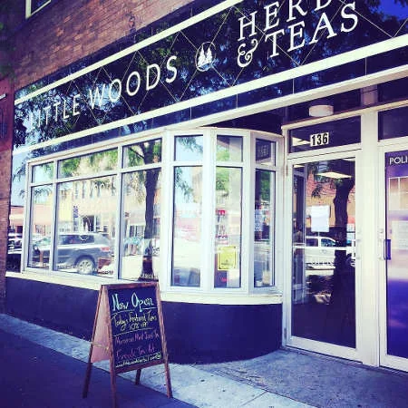
Little Woods Herbal storefront at 136 Main Street in Ames · Photo source
Holistic Harmony combines a retail herb and wellness shop with a tea selection and educational classes in Clear Lake. Its offerings include herbal formulas, house tea blends, and botanical products.
The shop also publishes a menu of wellness services and welcomes visitors during its regular retail hours.
313 N 8th Street Clear Lake, Iowa 50428 641-357-4372 Monday–Wednesday and Friday 9am–5pm; Thursday 9am–6pm; Saturday 9am–4pm; Sunday closed.
Official operator website publishes a public retail location and shop hours; photo visually reviewed against the official source page.
The Holistic Harmony team photographed inside the Clear Lake shop · Photo source
Tonic Herb Shop offers bulk herbs and spices, small-batch botanical products, and medicine-making supplies at its Shepherdstown storefront. Its elixir bar gives visitors another way to explore the shop’s herbal blends.
The business also hosts herbal workshops and offers consultations and compounding services.
140 E German Street Shepherdstown, West Virginia 25443 304-870-4527 Monday and Wednesday–Friday 11am–6pm; Tuesday 11am–4pm; Saturday 10am–6pm; Sunday 11am–5pm.
Official operator website publishes a public retail location and shop hours; photo visually reviewed against the official source page. Official homepage also has October 2026 articles and in-person events at this shop.
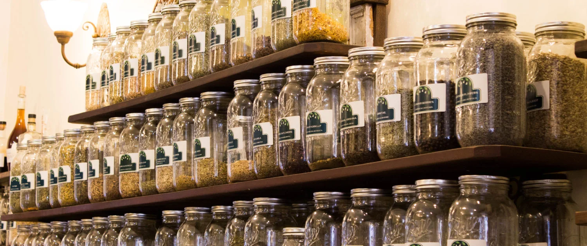
Labeled bulk herb jars on the shelves at Tonic Herb Shop · Photo source
Wild Ginger & Spice stocks bulk herbs, teas, and spices alongside handmade body products in Davis. Visitors can also browse West Virginia foods, artisan gifts, and other goods in its historic stone storefront.
The operator describes the space as a shop and working lab and explicitly invites in-person visits.
407 William Avenue Davis, West Virginia 26260 304-259-5555 Monday–Thursday 9:30am–4:30pm; Friday 9:30am–5:30pm; Saturday 9am–5:30pm; Sunday 9am–5pm.
Official operator website publishes a public retail location and shop hours; photo visually reviewed against the official source page.
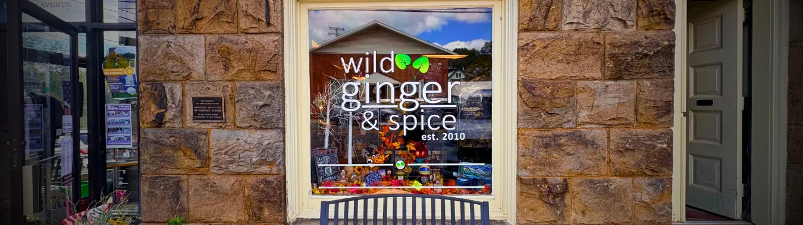
Wild Ginger & Spice’s stone storefront and shop window in Davis · Photo source
Lisa Herbal Corporation is a Chicago herbal business offering prepared teas and herbal products from its Wentworth Avenue location.
Consultations are by appointment. The business asks customers ordering tea refills to call ahead.
2802 S Wentworth Avenue, Suite 1 Chicago, Illinois 60616 312-808-1186 Monday–Wednesday, Friday–Saturday 9:30am–5pm; Sunday 9am–1:30pm; Thursday closed
Official business website identifies a public retail shop and visitor address; checked 2026-10-27.
No photo: Official homepage assets include logo and generic staged traditional-Chinese-medicine background; both rejected. Original Borderless reporting documents genuine2022LisaHerbal photographs with named photographer, but both direct downloads returned403. No suitable downloadable image obtained.
DMApothecary is part of Chicago’s Mella’Ninn Complex, a community shop on North Broadway. Its selection includes herbal tea blends and botanical personal care goods.
The shop also advertises hands-on activities such as soap-making classes. Contact the business for its current visiting schedule.
5430 N Broadway Chicago, Illinois 60640 773-758-4537 Tuesday–Friday 11am–5pm; call for Saturday hours; Sunday–Monday closed
Official business website identifies a public retail shop and visitor address; checked 2026-10-27. Official sister tea site deestea.com corroborates publictea shopat5430; Saturdayclosingtypo5amomitted.
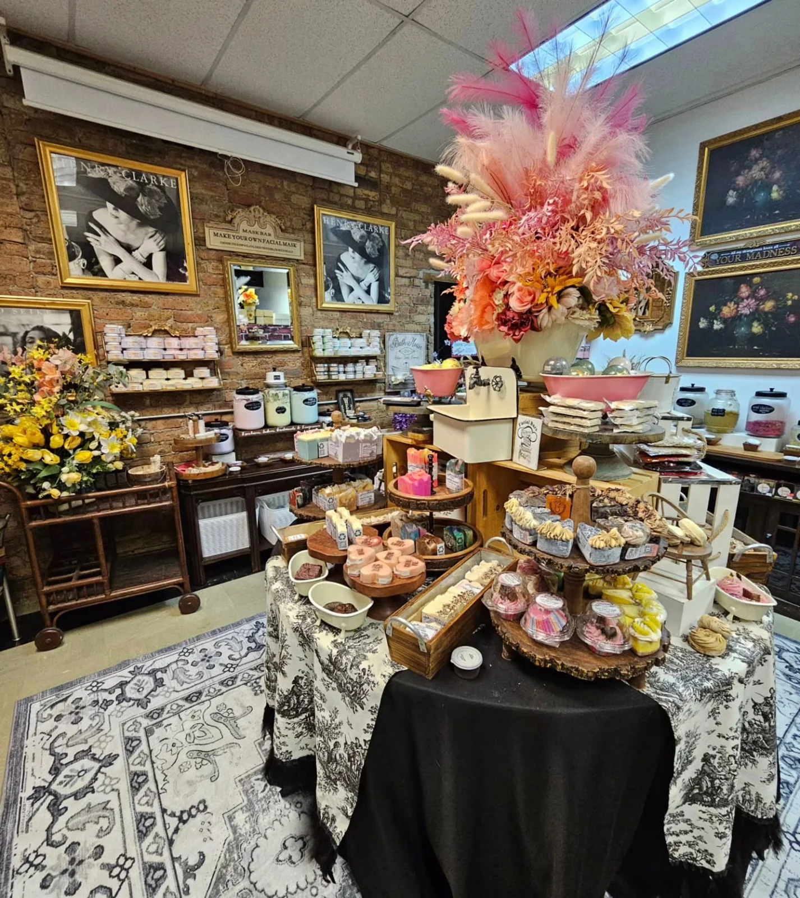
Photo published by DMApothecary at Mella’Ninn Complex · Photo source
Topaz Apothecary & Collective stocks more than 90 loose herbs alongside tea blends and homemade herbal salves. Its downtown Waukesha shop also carries incense, jewelry and other gifts.
The collective combines retail shopping with services from local practitioners. Visitors can contact the shop for current offerings.
804 N Grand Avenue Waukesha, Wisconsin 53186 262-408-3334 Tuesday–Thursday 12:30pm–6pm; Friday 12:30pm–9pm; Saturday 12:30pm–5pm; Sunday–Monday closed
Official business website identifies a public retail shop and visitor address; checked 2026-10-27.
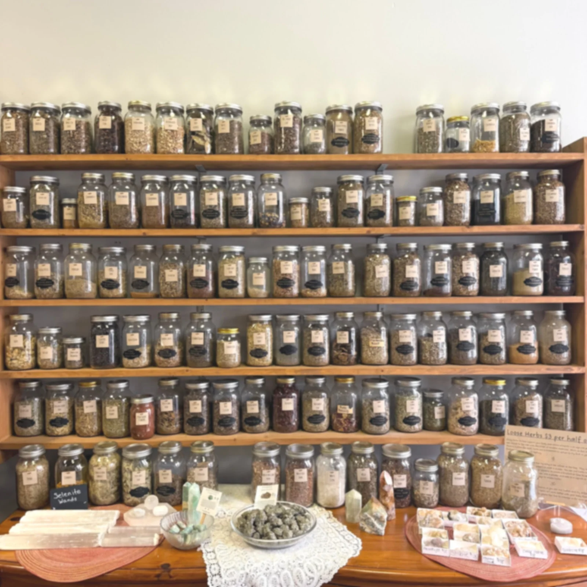
Photo published by Topaz Apothecary & Collective · Photo source
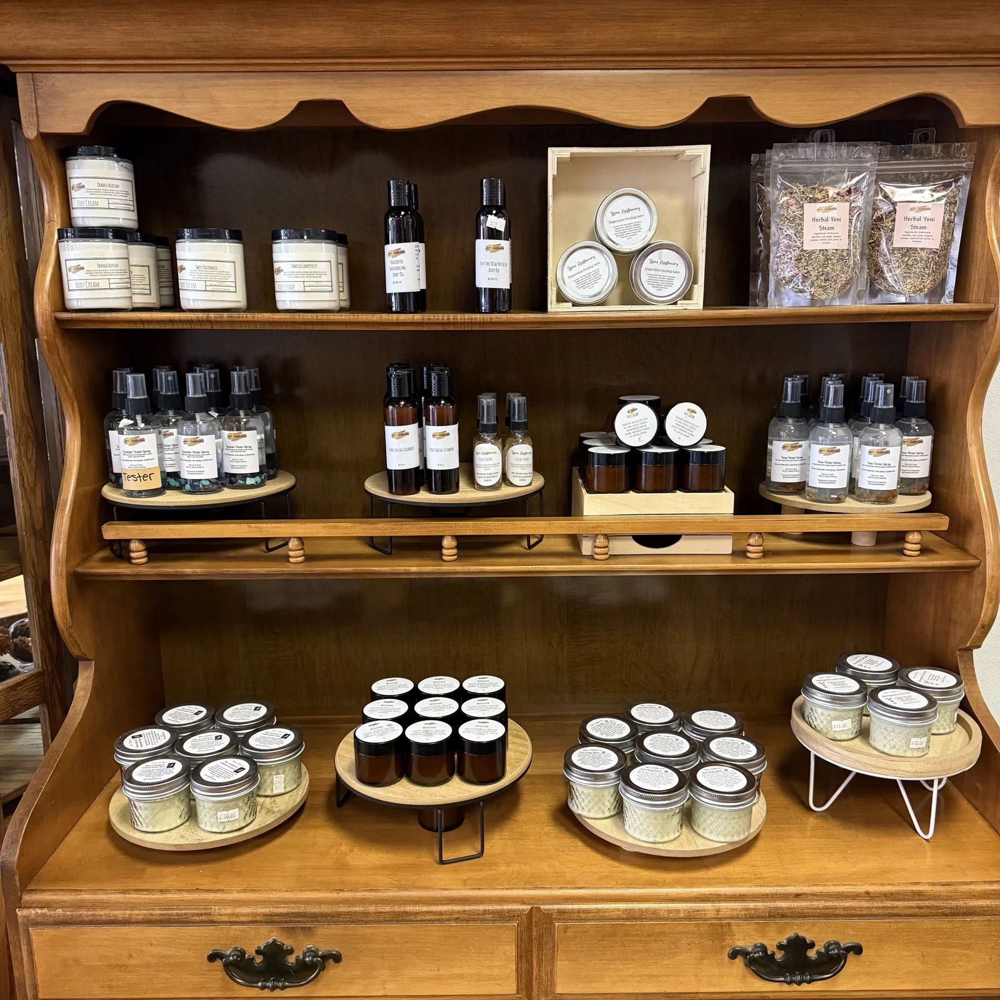
Photo published by Topaz Apothecary & Collective · Photo source
Aurora’s Apothecary offers herbs, teas, tinctures and botanical body products at its Appleton shop. The Wisconsin business makes many of its herbal goods in-house.
Its current website lists this branch among its visitor locations. Check with the store for current hours.
1607 N Richmond Street Appleton, Wisconsin 54911 920-358-7080 Contact the shop for current hours.
Current official site lists this branch with a Google Maps link. Address corroborated by local destination/arts organization. Official map links resolve to Appleton 44.2759211,-88.4160386; Green Bay 44.5172506,-88.021467; Fond du Lac 43.7740933,-88.446724. Do not use obsolete Greenleaf or Fish Creek listings.
Aurora’s Apothecary offers herbs, teas, tinctures and botanical body products at its Green Bay shop. The Wisconsin business makes many of its herbal goods in-house.
Its current website lists this branch among its visitor locations. Check with the store for current hours.
133 N Broadway, Suite A Green Bay, Wisconsin 54303 920-857-3969 Contact the shop for current hours.
Current official site lists this branch with a Google Maps link. Address corroborated by local destination/arts organization. Official map links resolve to Appleton 44.2759211,-88.4160386; Green Bay 44.5172506,-88.021467; Fond du Lac 43.7740933,-88.446724. Do not use obsolete Greenleaf or Fish Creek listings.
Aurora’s Apothecary offers herbs, teas, tinctures and botanical body products at its Fond du Lac shop. The Wisconsin business makes many of its herbal goods in-house.
Its current website lists this branch among its visitor locations. Check with the store for current hours.
171 S Main Street Fond du Lac, Wisconsin 54935
Contact the shop for current hours.
Current official site lists this branch with a Google Maps link. Address corroborated by local destination/arts organization. Official map links resolve to Appleton 44.2759211,-88.4160386; Green Bay 44.5172506,-88.021467; Fond du Lac 43.7740933,-88.446724. Do not use obsolete Greenleaf or Fish Creek listings.
Lakota Made is a Native-owned Mankato shop selling herbal teas, tinctures, salves, soaps and personal care products. Its goods are made and packed in small batches.
The shop welcomes visitors at its North Riverfront Drive location. Current hours are published on the official site.
Present Moment Herbs & Books offers bulk herbs, herbal extracts, teas, aromatherapy items and personal care products. The Minneapolis shop also stocks a large selection of new and used books.
Visitors can browse botanical supplies alongside incense, crystals and other specialty goods at its Grand Avenue store.
3546 Grand Avenue S Minneapolis, Minnesota 55408 612-824-3157 Monday–Saturday 10am–7pm; Sunday 12pm–5pm
Official business website identifies a public retail shop and visitor address; checked 2026-10-27.
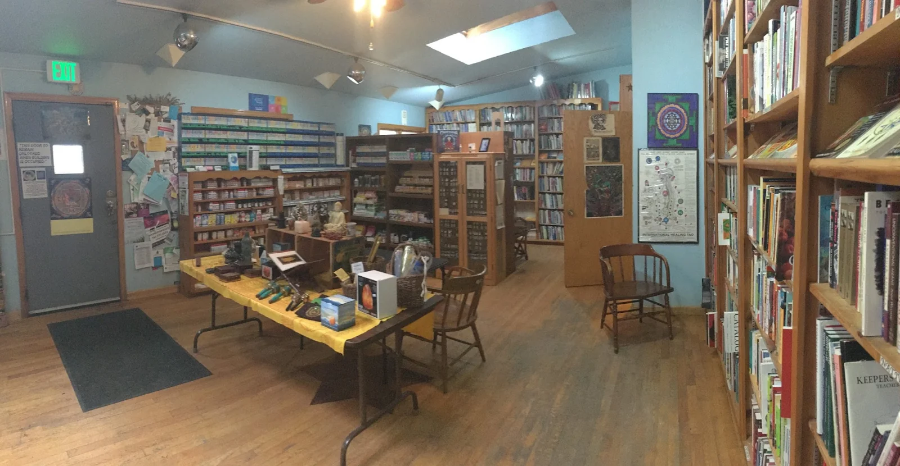
Inside Present Moment Herbs & Books in Minneapolis · Photo source
Magus Books and Herbs is a Minneapolis shop offering new and used books, herbs and consignment goods. It has served the community since 1992.
The store’s current home is on Central Avenue NE. Its website lists events and daily visitor hours at this location.
2520 Central Avenue NE Minneapolis, Minnesota 55418 612-379-7669 Daily 12pm–6pm; closed New Year’s Day, Memorial Day, July 4, Thanksgiving and Christmas
Official site explicitly identifies new location and Summer 2026 events at 2520 Central Avenue NE. Older Dinkytown addresses are obsolete.
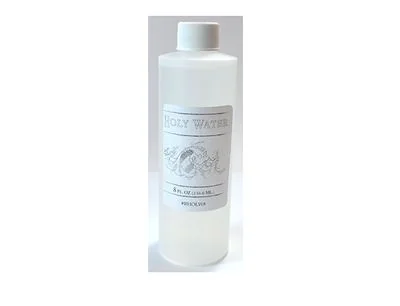
Magus Books and Herbs’ labeled Holy Water bottle from its featured catalog · Photo source
Jewelweed curates herbal products, flower essences, tea, aromatherapy and botanical personal care from small makers. The shop also offers its own micro-batch herbal line.
It moved from Wayzata to Excelsior in May 2025. Classes and events are part of the shop’s ongoing community offerings.
223 Water Street Excelsior, Minnesota 55331 952-476-7631 Tuesday–Saturday 11am–5pm; Sunday 12pm–5pm; Monday closed
Official page confirms relocation May2025 to223WaterStreet,Excelsior. Current local Chamber corroborates address,phone,correctZIP55331. Disregard stockistpage ZIP55341 typo.
Flourish Herbals & Aromatherapy is a Garden City shop offering herbal products and aromatic goods. Visitors can ask its herbalists about specific herbs.
The store is located on East Laurel Street. Its contact page publishes weekday visitor hours; call to confirm Saturday closing time.
203 E Laurel Street Garden City, Kansas 67846 620-290-3416 Tuesday–Friday 10am–5:30pm; Saturday hours vary, call ahead; Sunday–Monday closed
Official address and phone confirmed. Same contact page conflicts Saturday4pm versus4:30pm, so Saturday closing omitted pending confirmation.
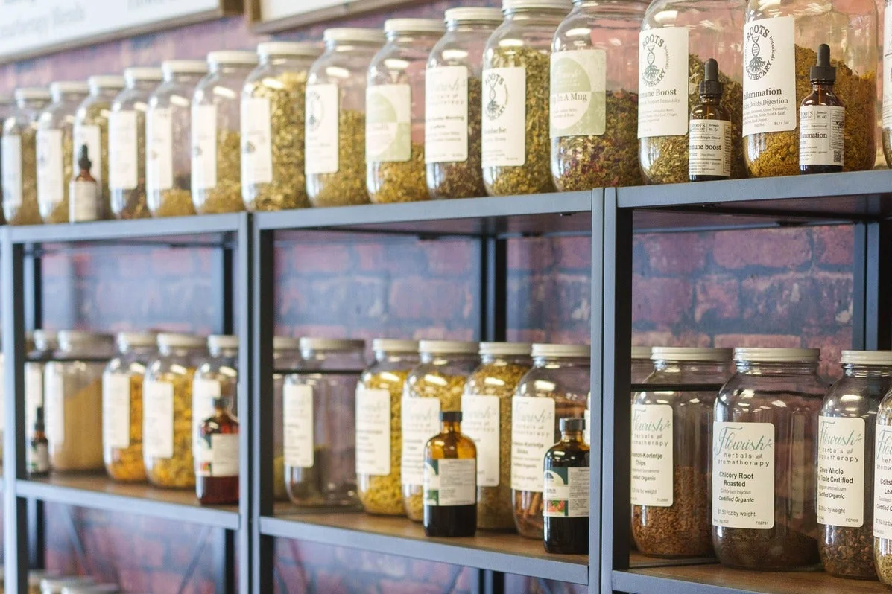
Photo published by Flourish Herbals & Aromatherapy · Photo source
Phoenix Herb offers individual herbs, herbal blends, teas, culinary spices, tinctures and essential oils. The shop also carries brewing accessories and goods from local makers.
Visitors can browse at its Kansas City storefront on Main Street. The homepage announces its current expanded weekday hours.
3957 Main Street Kansas City, Missouri 64111 816-531-8327 Monday–Friday 10am–6pm; Saturday 10am–4pm; Sunday closed
Current homepage says NOW OPEN Monday–Friday10–6,Saturday10–4; older contact page retains narrower Tue–Sat schedule. Use homepage announcement.
Cheryl’s Herbs offers dried botanicals, liquid extracts, essential oils and prepared herbal blends. The business serves both retail and wholesale customers.
Its public shop is on Manchester Road in Maplewood, in the St. Louis area. The official contact page lists regular retail hours.
STL Herbs and Aromatics offers dried herbs, herbal products and essential oils from its Manchester Road storefront. Its online catalog includes individual botanicals and prepared blends.
Visitors can shop in person during the business’s posted retail hours. This is a separate store from nearby Cheryl’s Herbs.
Centered Spirit’s shop offers loose teas, herbs, tinctures and salves, including products from local makers and producers in France and Mexico. Teaware and wellness books round out its selection.
The tea room has public shopping hours at the Wornall Road location. The center’s individual services are by appointment.
8131 Wornall Road Kansas City, Missouri 64114 816-225-9393 Tea room and shop: Tuesday–Friday 10:30am–5:30pm; Saturday 11am–4pm; center services by appointment
Official business website identifies a public retail shop and visitor address; checked 2026-10-27.
Owner Emilie in front of loose-leaf tea shelves at Centered Spirit · Photo source
Hawthorn & Violet stocks more than 200 bulk herbs along with tinctures, herbal books, essential oils and locally made personal care goods. The shop sources herbs from established botanical suppliers.
Visitors can browse in person or arrange porch pickup. The business also offers classes and naturopathic services.
1024 N Leroy Street Fenton, Michigan 48430 810-569-6820 Monday–Thursday 10am–5:30pm; Friday 10am–8pm; Saturday 10am–4pm; Sunday 12pm–4pm
Official contact gives current hours including Friday8pm. Address corroborated by Michigan state food-retail license list and 2026 business posts; website map may need extraction for primary address evidence.
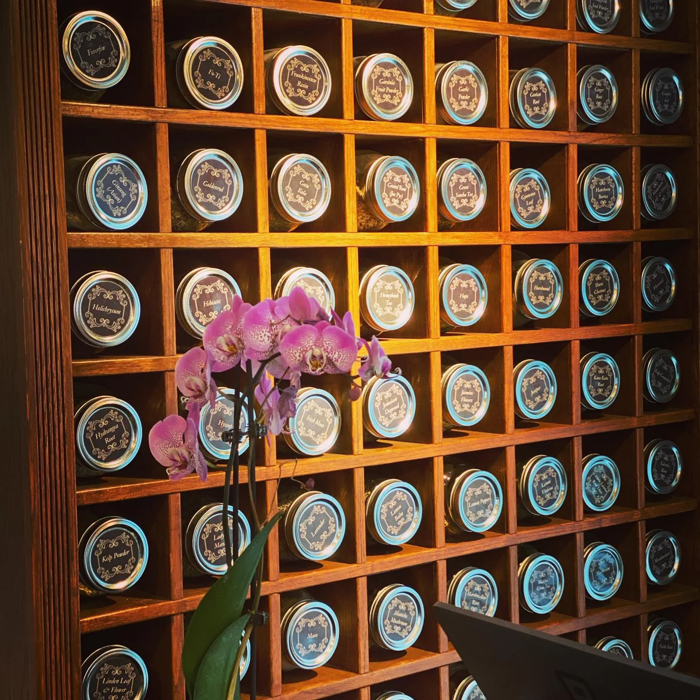
Photo published by Hawthorn & Violet Herbal Apothecary · Photo source
Those Nature People offers organic herbs, teas, spices, essential oils and handmade body products. Its Frankenmuth location is one of three shops listed by the Michigan business.
The Main Street shop welcomes visitors seven days a week.
455 S Main Street Frankenmuth, Michigan 48734
Monday–Thursday 11am–7pm; Friday–Sunday 9am–9pm
Official business website identifies a public retail shop and visitor address; checked 2026-10-27.
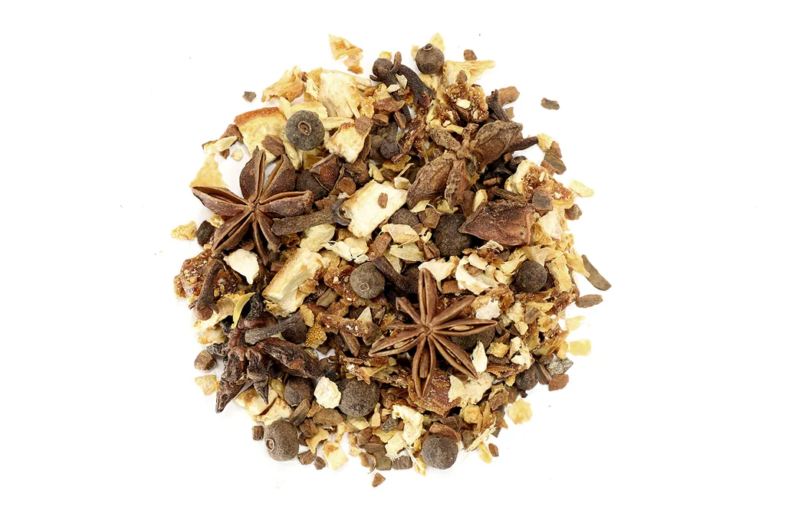
Bulk herbs offered by Those Nature People Herb Haus · Photo source
Those Nature People offers organic herbs, teas, spices, essential oils and handmade body products. Its Flint location is one of three shops listed by the Michigan business.
This year-round indoor market stall welcomes visitors on the market’s published shopping days.
300 E First Street, Flint Farmers’ Market Flint, Michigan 48502
Tuesday, Thursday and Saturday 9am–5pm
Official business website identifies a public retail shop and visitor address; checked 2026-10-27.
Bulk herbs offered by Those Nature People Herb Haus · Photo source
Those Nature People offers organic herbs, teas, spices, essential oils and handmade body products. Its Davison location is one of three shops listed by the Michigan business.
This year-round indoor market stall welcomes visitors on the market’s published shopping days.
8110 E Court Street, Davison Farmers’ Market Davison, Michigan 48423
Tuesday, Thursday and Saturday 9am–5pm
Official business website identifies a public retail shop and visitor address; checked 2026-10-27.
Bulk herbs offered by Those Nature People Herb Haus · Photo source
Perry’s Place is a natural health tea shop offering more than 145 bulk teas and 200 bulk herbs. It also carries essential oils, sea salts, culinary seasonings and Michigan honey.
The shop is at Main and Maple in downtown Cedar Springs. Private tea parties can be arranged outside normal opening hours.
90 N Main Street, Suite B Cedar Springs, Michigan 49319 616-439-0890 Tuesday–Saturday 11am–6pm
Official business website identifies a public retail shop and visitor address; checked 2026-10-27.
Earthley’s Columbus retail store carries bulk dried herbs alongside the company’s herbal formulations, books, cleaning supplies and body care products. Its herb wall is available to in-store shoppers.
The store also hosts DIY classes and events. Visitors can browse the full Earthley range at the East Broad Street location.
6903 E Broad Street Columbus, Ohio 43213 614-721-7696 Monday–Friday 10am–6pm; Saturday 10am–7pm; Sunday 12pm–6pm
Official business website identifies a public retail shop and visitor address; checked 2026-10-27.
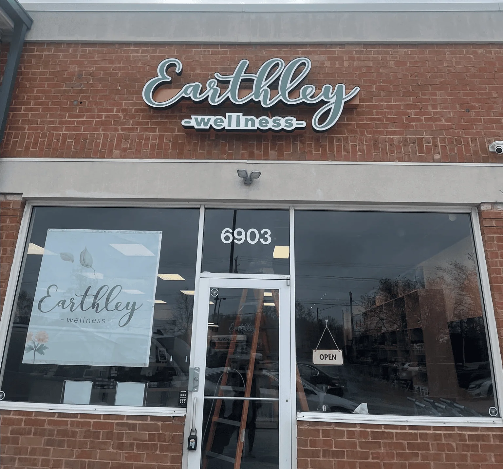
Earthley Wellness retail store exterior showing brick building facade with white Earthley logo sign above large glass storefront windows displaying products at address 6903 · Photo source
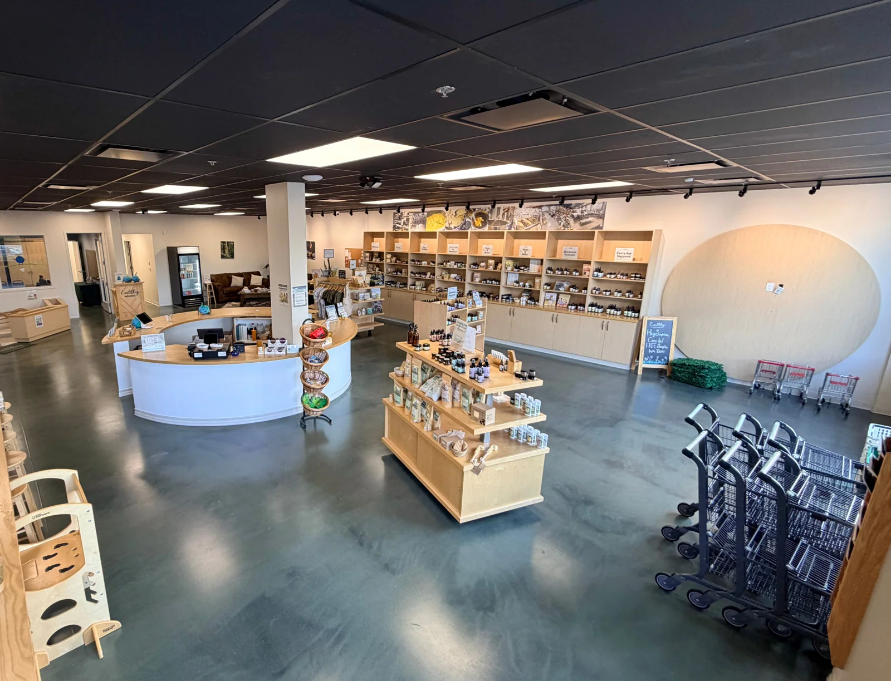
Earthley Wellness retail store interior with wood shelving, herbal products, and curved checkout counter. · Photo source
Spirit Apothecary offers bulk herbs, teas, essential oils, extracts and botanical supplies. Its website lists more than 500 medicinal, culinary and traditional-use herbs online.
The business identifies its current public shop at 691 Broadway Avenue in historic downtown Bedford. Orders can also be collected there.
Official homepage and visit page both give current 691 Broadway address; visit page calls business Spirit Apotheosis. Phone440-439-HERB converted to digits4372.
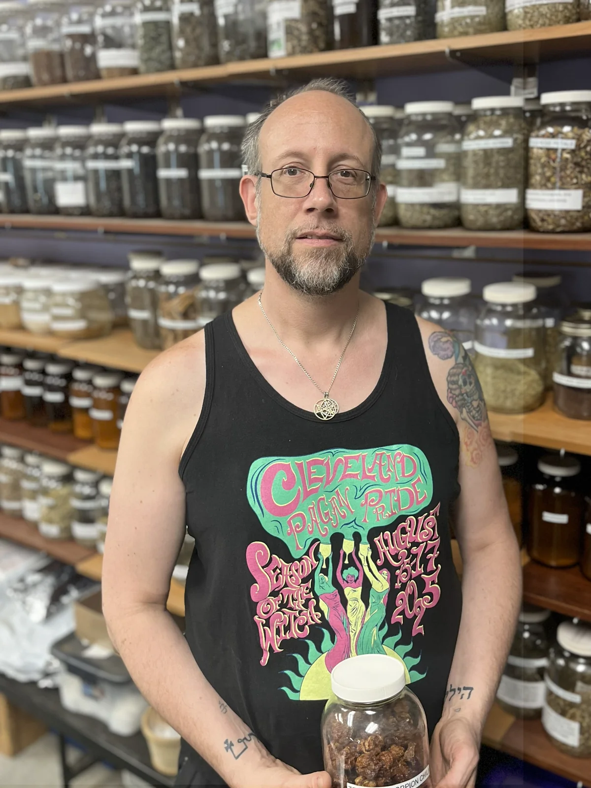
Spirit Apothecary co-owner Matt Stewart beside the shop’s herb jars · Photo source
Clintonville Natural Foods carries bulk herbs and spices alongside natural foods and other shop goods. The business invites customers to call about its botanical selection.
Its Indianola Avenue store is open seven days a week and supports products from local food producers.
Bentley’s Apothecary offers bulk dried herbs, teas, botanical body products and sustainable home goods. The business began as a mother-and-daughter herbal venture.
Visitors can browse its North Broad Street shop in Fremont. Contact the store to confirm current shopping hours.
339 N Broad Street Fremont, Nebraska 68025 402-620-8381 Contact the shop for current hours.
Official homepage gives339N Broad and4026208381. Story page lists a differentphone4024592543, so homepagephone retained. ZIP68025 corroborated by current local event listing; confirm Census geocode.
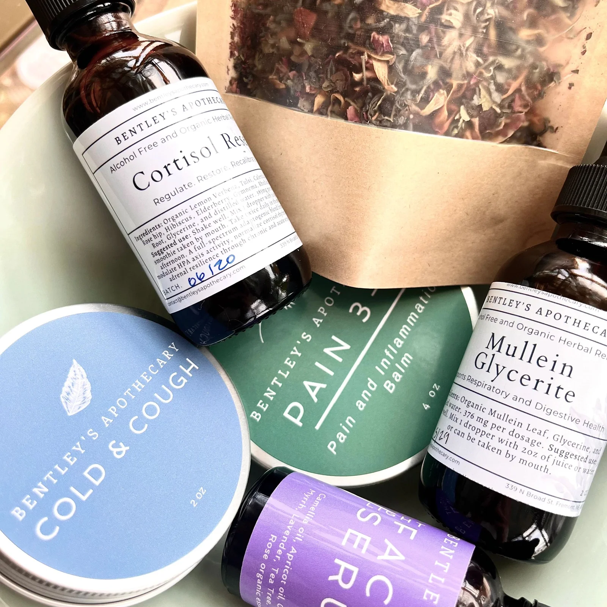
Photo published by Bentley’s Apothecary · Photo source
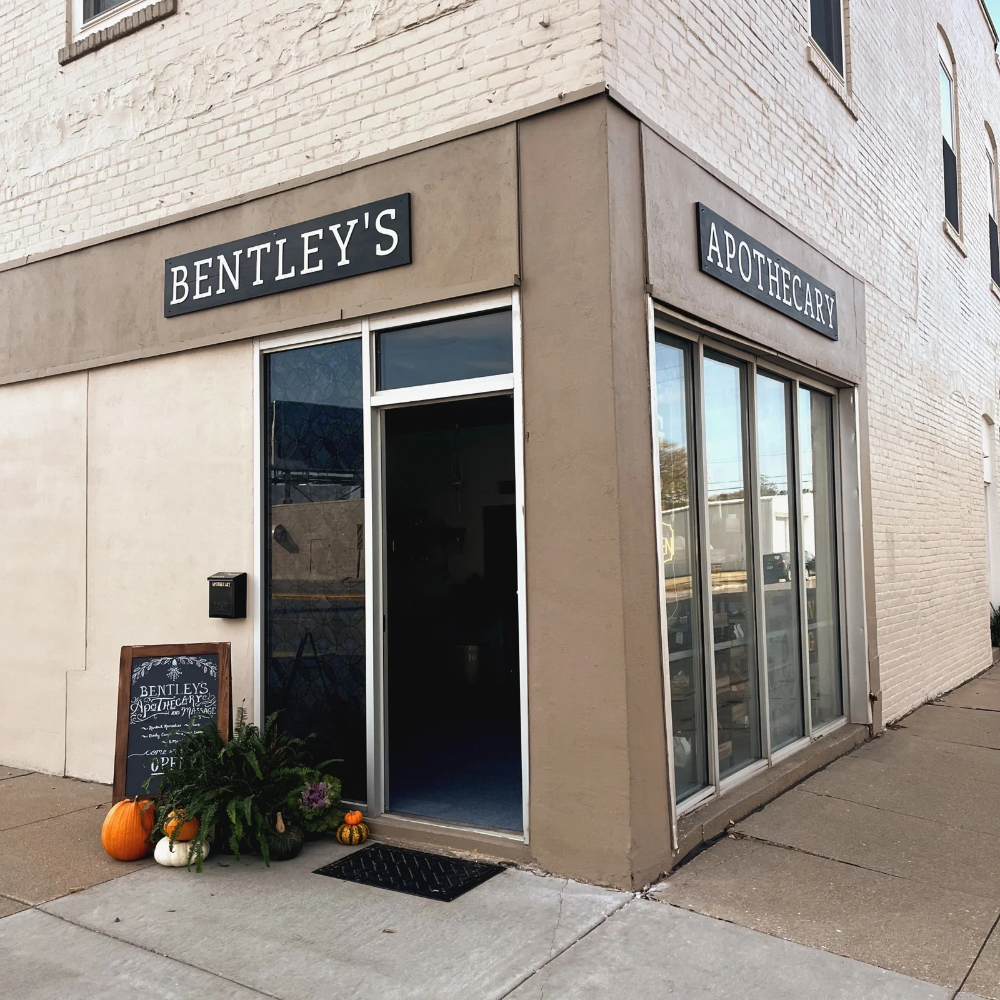
Photo published by Bentley’s Apothecary · Photo source
Prairie Star Botanicals makes herbal extracts with a focus on prairie plants and regional growers. Its official site identifies a public store in Blair.
Customers can visit the North 16th Street location during published hours or choose free local order pickup.
321 N 16th Street Blair, Nebraska 68008 402-533-4433 Monday–Tuesday, Thursday–Friday 9am–5pm; Wednesday 9am–3pm
Official business website identifies a public retail shop and visitor address; checked 2026-10-27.
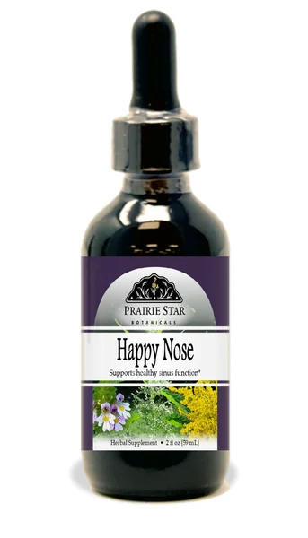
Prairie Star Botanicals herbal extract product · Photo source
Wild Thyme Herbal Apothecary is a community herb shop offering bulk herbs, tinctures, teas, salves, oils and botanical skin care. Its owner also makes many of the shop’s products.
The North Third Street store offers herbal consultations and classes. Visitors can browse its botanical selection in downtown Bardstown.
224 N 3rd Street Bardstown, Kentucky 40004 502-331-6061 Monday 12pm–5pm; Tuesday–Saturday 10am–5pm; Sunday closed
Official site Thursday10pm typo resolved by local Chamber published Tue–Sat10am–5pm schedule.
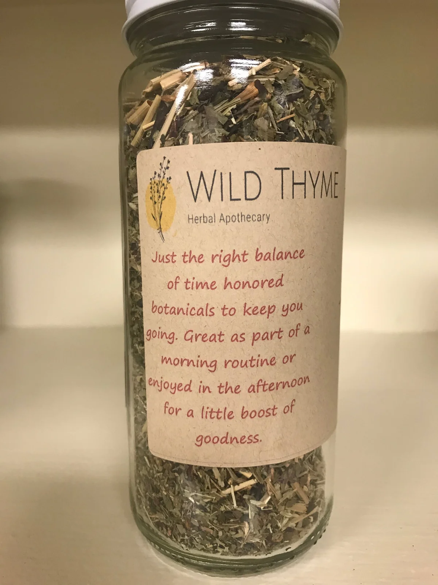
Herbal product photograph published by Wild Thyme Herbal Apothecary · Photo source
Bloodroot Herb Shop offers bulk herbs and teas, herbal goods, plants and zines. The nonprofit organization emphasizes accessible herbal education and community care.
Its downtown Ypsilanti shop also hosts classes, consultations and community programs. Official store hours include Wednesday through Sunday shopping.
Gathered Botanicals offers herbal teas, tinctures, powders and botanical skin care from its College Avenue shop. Its own product line uses plant ingredients and traditional herbal methods.
The storefront hosts weekly hands-on workshops with local makers, herbalists and wellness practitioners. In-store pickup is available.
781 College Avenue NE Grand Rapids, Michigan 49503
Wednesday–Saturday; check store for daily hours
Official site confirms storefront781CollegeAveNE andWed–Sat. Michigan officialtourism confirmsZIP49503 andherbalinventory; localCVB July2026class confirms publiclocation.
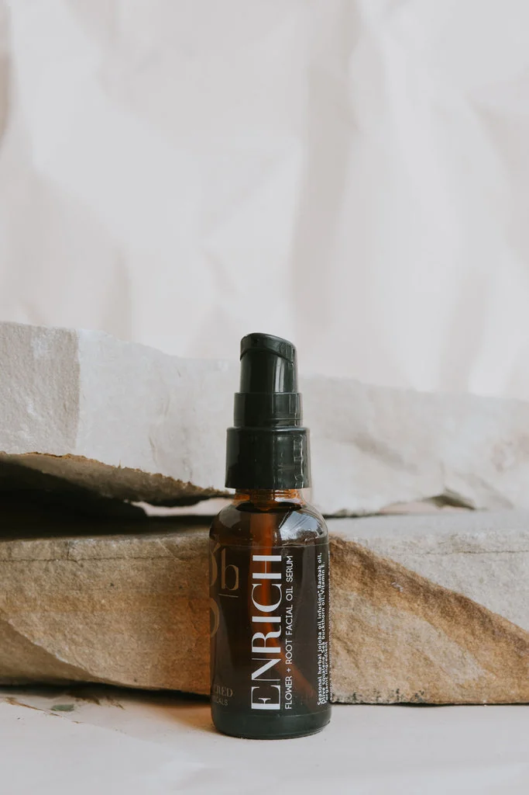
Photo published by Gathered Botanicals · Photo source
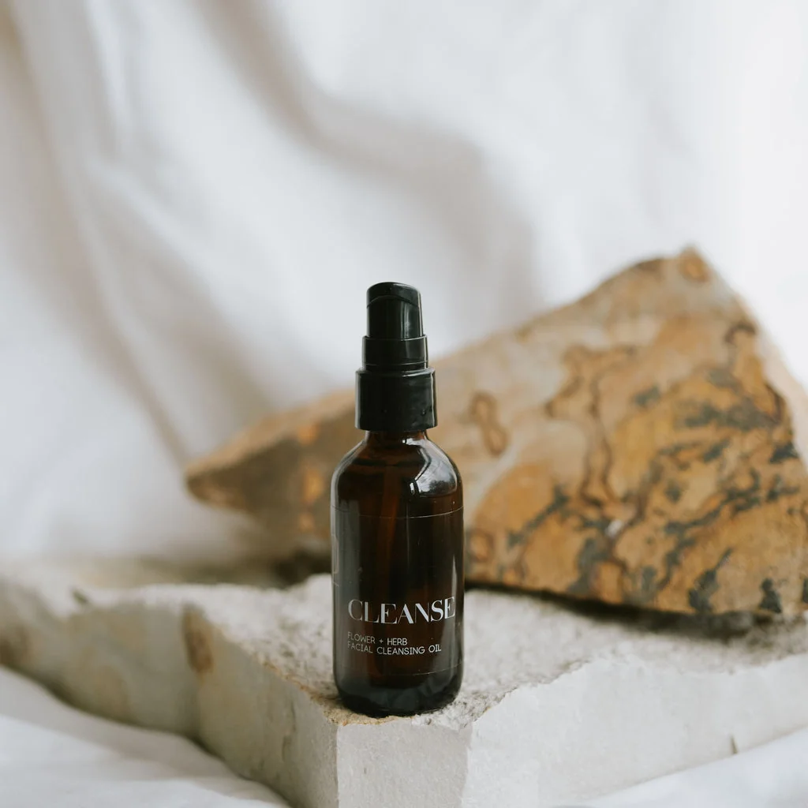
Photo published by Gathered Botanicals · Photo source
Juniper Apothecary is a family-operated store offering small-batch herbal products, teas, tinctures and botanical body care. Its expanded shop includes an herbal tea and coffee bar.
The business relocated to South Minnesota Avenue in summer 2026. The official location page gives daily public shopping hours.
2019 S Minnesota Avenue Sioux Falls, South Dakota 57105 605-215-3918 Monday–Saturday 9am–5pm; Sunday closed
Terry’s Health Products is an independent Bismarck shop carrying bulk herbs and spices, teas, supplements and natural foods. Its selection also includes essential oils and locally made goods.
The business has served the area since 1984. Visitors can shop at the East Main Avenue location; contact the store for current hours.
717 E Main Avenue Bismarck, North Dakota 58501 701-223-1026 Contact the shop for current hours.
Herbalist & Alchemist welcomes visitors to a retail shop at its Washington headquarters. The store stocks a selection of the company’s herbal extracts, compound formulas, capsules, oils and ointments.
The business also publishes a schedule of free public herbal lectures. Visitors seeking a particular product or bottle size are encouraged to call ahead to check store availability.
401 East Washington Avenue Washington, New Jersey 07882
Bluestem Botanicals brings its farm products to a storefront on East State Street in Doylestown. The shop carries dried herbs, teas, extracts, herbal soaps and locally sourced honey.
The business began as Barefoot Gardens in 2008 and opened its farm store in 2024. Alongside its own botanicals, the store features candles, dried flowers and other goods from its community.
52A East State Street Doylestown, Pennsylvania 18901
Monday–Saturday 11am–6pm.
Official website explicitly lists a public retail location and visitor information; reviewed October 27, 2026.
Dorothy’s Herb Shop & Herbal Apothecary is a public retail shop inside The Shops on West Diamond in Butler. Its catalog includes herbal extracts, loose botanicals and herbal reference books.
Visitors can browse the apothecary during the published shop hours. The online catalog provides a preview of the store’s extracts, topical goods and books before a visit.
6 West Diamond Street, inside The Shops on West Diamond Butler, Pennsylvania 16001
Spirit Wise Herbs & Magick is a downtown Portsmouth apothecary founded by herbalists Veronica and Erika. The shop carries dried herbs, custom tea blends, tinctures, tonics and flower essences.
Its offerings also include tools for herbal crafting and a changing schedule of classes, workshops and community gatherings. The founders teach herbal studies at Misty Meadows.
60 State Street Portsmouth, New Hampshire 03801
Check the shop’s current hours before visiting.
Official website explicitly lists a public retail location and visitor information; reviewed October 27, 2026.
Greenwood Herbals operates an apothecary and teaching center in Limerick. Its shop offers beverage teas, herbal tea blends, extracts, creams, salves and body products.
The property also includes gardens and a labyrinth. Visitors can shop during the published hours or contact the business to learn about current educational offerings.
The Herbal Path’s Dover store carries herbal products and nutritional supplements. The business has served the New Hampshire Seacoast since 1997 and combines its retail selection with an educational focus.
Visitors can browse the Central Avenue shop during its published daily hours. The team includes staff with varied backgrounds in herbs and natural products.
835 Central Avenue Dover, New Hampshire 03820 603-740-8400 Monday–Friday 9:30am–5:30pm; Saturday 9:30am–4pm; Sunday 10am–4pm.
Official website explicitly lists a public retail location and visitor information; reviewed October 27, 2026.
The Herbal Path’s Portsmouth branch offers herbal products and nutritional supplements from a yellow house on Woodbury Avenue. It is one of the business’s two New Hampshire Seacoast retail locations.
The store publishes daily visitor hours and offers parking in front and behind the building. Its retail work is complemented by the wider Herbal Path team’s educational resources.
The Alchemist’s Kitchen is a botanical dispensary on Crosby Street in SoHo. Its flagship store carries botanical products and offers an herbal counter where visitors can ask about the shop’s selection.
The business also organizes educational events and workshops. An adjacent elixir bar at 117 Crosby Street is associated with Anima Mundi; this profile represents the published flagship address at 119 Crosby Street.
119 Crosby Street New York, New York 10012 518-625-3477 Daily 11am–6pm.
Flagship address 119 Crosby is distinct from adjacent collaborative Anima Mundi at 117 Crosby; root may choose one combined profile to avoid shared-business ambiguity.
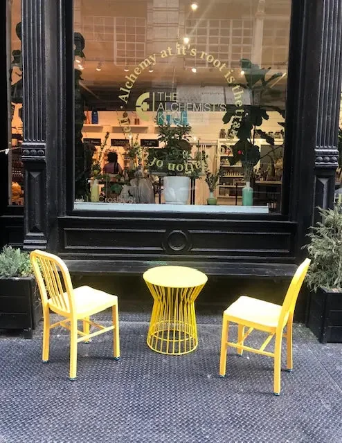
The Alchemist’s Kitchen botanical shop · Photo source
Grian Herbs Apothecary makes small-batch herbal extracts, tea blends, syrups and botanical infusions. The Vermont business has been operating since 1997 and is led by herbalist and formulator Iris Gage.
The Elm Street shop welcomes walk-in visitors and offers curbside pickup during its posted hours. The business also publishes information about consultations, education and workshops.
34 Elm Street Montpelier, Vermont 05602 802-223-0043 Tuesday–Saturday noon–5pm.
Official website explicitly lists a public retail location and visitor information; reviewed October 27, 2026.
Integrative Herbalism combines a retail herbal apothecary and tea shop with consultation services. Its Kinnelon storefront carries herbs and rotating specialty botanicals.
The business also hosts classes and individual workshops. Posted retail hours distinguish the public shop from scheduled private consultations.
104 Boonton Avenue Kinnelon, New Jersey 07405 973-291-4041 Tuesday 11am–7pm; Wednesday 11am–5pm; Thursday–Friday noon–7pm; Saturday 11am–5pm; Sunday–Monday closed.
Official website explicitly lists a public retail location and visitor information; reviewed October 27, 2026.
The apothecary wall at Integrative Herbalism · Photo sourceIntegrative Herbalism’s front window display · Photo source
Flower Power Herbs & Roots has served New York’s herbal community since 1993. Its East Village shop offers bulk herbs, tinctures, salves, books and elixirs.
The business also runs herbal classes and a second shop in Piermont. Visitors can browse the East 9th Street location during the published daily opening hours.
406 East 9th Street New York, New York 10009 212-982-6664 Daily noon–7pm.
Official website explicitly lists a public retail location and visitor information; reviewed October 27, 2026.
Herbalists at the Flower Power counter · Photo source
Flower Power’s Piermont shop and formulary opened in 2019. It extends the New York herbal business’s selection of herbs, botanical preparations and books into a Hudson River village setting.
The official website publishes weekend hours and also welcomes inquiries about appointments. Because different banners on the site show different weekday schedules, calling before travel is recommended.
449 Piermont Avenue Piermont, New York 10968 845-848-9911 Saturday–Sunday noon–6pm; other visits by appointment. Confirm before travel.
Official main body says Saturday–Sunday noon–6; footer says Wednesday–Sunday. Conservatively list verified weekend overlap and call ahead.
Flower Power’s own Meadowsweet tincture in a labeled dropper bottle · Photo source
Herbs and Mylk welcomes visitors to its apothecary in North Kingstown. Its botanical offerings include herbal goods and the business’s Santo Vivo line.
The shop is on the first floor at the front entrance of its Ten Rod Road address. The business also accepts inquiries about custom gift favors and studio events.
650 Ten Rod Road, Suite 129A North Kingstown, Rhode Island 02852
Tuesday–Sunday 11am–5pm.
Official website explicitly lists a public retail location and visitor information; reviewed October 27, 2026.
Wildcraft Herb Shoppe is a mother-and-daughter apothecary business established in April 2023. Its East Hampton storefront carries herbs, spices, teas and artisan-made goods.
Visitors can browse the store in person or preview the selection online. The shop also shares information about events, product tutorials and community activities.
70 Main Street, Unit B East Hampton, Connecticut 06424 860-365-5171 Wednesday 11am–5pm; Thursday–Saturday 11am–6pm; Sunday 11am–4pm.
Official website explicitly lists a public retail location and visitor information; reviewed October 27, 2026.
Anima Mundi’s Brooklyn shop sits beside its herbal production space in Greenpoint. It offers bulk herbs, loose teas, tonics, elixirs and the business’s own botanical formulas.
A seasonal tonic bar serves plant-based drinks while visitors browse the apothecary. The location also hosts events and offers custom formula ordering through its herbal team.
31 Noble Street Brooklyn, New York 11222 929-397-0049 Daily 10am–7pm.
Official website explicitly lists a public retail location and visitor information; reviewed October 27, 2026.
Anima Mundi Apothecary in Brooklyn · Photo sourceAnima Mundi’s Brooklyn apothecary · Photo source
Remedies Herb Shop opened in Carroll Gardens in 2014. Its shelves include loose herbs, roots, spices, teas, tinctures, essential oils and flower essences.
The shop also carries bath and body products, books and supplies for tea and herbal preparation. Visitors can shop in person or arrange pickup; the business publishes a separate Brooklyn class schedule.
453 Court Street Brooklyn, New York 11231 718-643-4372 Monday–Thursday noon–7pm; Friday noon–6pm; Saturday noon–7pm; Sunday noon–5pm.
Official website explicitly lists a public retail location and visitor information; reviewed October 27, 2026.
Remedies Herb Shop in Carroll Gardens, Brooklyn · Photo source
Red Antler Apothecary makes botanical soaps, body-care goods and herbal preparations. Its Lowell retail location is inside Hive Public Market on Paige Street.
The team develops its own recipes and grows some ingredients. The official website identifies an herbal counter and staff with experience in herb growing and formulation.
101 Paige Street, Hive Public Market Lowell, Massachusetts 01852
Wednesday–Saturday 11am–6pm; Sunday 11am–5pm.
Use current official 101 Paige Street address; older directories still show 250 Jackson or 462 Merrimack.
Handcrafted Red Antler Apothecary goods · Photo source
Red Antler Apothecary’s Salem retail counter is housed inside Hive & Forge on Church Street. The business creates soaps, botanical body-care products and herbal preparations.
Its Salem shop is part of the same small-batch operation as the Lowell apothecary. The official website publishes separate Salem hours and identifies staff who work at this location.
30 Church Street, inside Hive & Forge Salem, Massachusetts 01970
Monday–Friday noon–6pm; Saturday 11am–6pm.
Official website explicitly lists a public retail location and visitor information; reviewed October 27, 2026.
Handcrafted Red Antler Apothecary goods · Photo source
Penn Herb Company’s flagship store offers a large retail selection of herbs, vitamins and natural products. The public shop is on North Second Street in Philadelphia.
Visitors can browse its herbal catalog in person during published daily hours. Penn Herb also operates a separate factory store in Northeast Philadelphia.
601 North Second Street Philadelphia, Pennsylvania 19123 215-632-6100 Monday–Saturday 10am–6pm; Sunday noon–5pm; closed major holidays.
Official website explicitly lists a public retail location and visitor information; reviewed October 27, 2026.
Penn Herb’s Nature’s Wonderland Mushroom Immune Support bottle · Photo source
Penn Herb Company’s Decatur Road factory store welcomes retail visitors in Northeast Philadelphia. It stocks herbs, vitamins and natural products alongside a limited selection of snacks and refrigerated beverages.
The factory shop offers weekday hours and is a separate visitor location from Penn Herb’s North Second Street flagship. The official contact page provides directions for both stores.
10601 Decatur Road Philadelphia, Pennsylvania 19154 215-632-6100 Monday–Friday 10am–5pm; closed weekends and major holidays.
Official website explicitly lists a public retail location and visitor information; reviewed October 27, 2026.
Penn Herb’s Nature’s Wonderland Mushroom Immune Support bottle · Photo source
The Rosemary House & Gardens is a family-run herb and spice specialty shop founded in 1968. Its selection includes bulk dried botanicals, culinary herbs, teas, herbal extracts, essential oils and seasonal live plants.
The Mechanicsburg storefront also carries seeds, books and tea supplies. A Peace Garden behind the shop is open daily from dawn to dusk.
120 South Market Street Mechanicsburg, Pennsylvania 17055 717-697-5111 Tuesday–Friday 10am–6pm; Saturday 10am–4pm; Sunday–Monday closed.
Official website explicitly lists a public retail location and visitor information; reviewed October 27, 2026.
The Peace Garden behind The Rosemary House · Photo source
Village Green Apothecary combines a public retail supplement store with a pharmacy in Bethesda. Its retail catalog includes herbs, mushroom products, teas and a broad range of nutritional supplements.
Visitors can shop at the West Cedar Lane location during posted retail hours. The business also offers consultation and educational resources.
5415 West Cedar Lane Bethesda, Maryland 20814 301-530-0800 Monday–Friday 8:30am–6pm; Saturday 8:30am–5pm; Sunday closed.
Official contact page includes 2026 holiday closures and current retail hours.
Staff inside Village Green Apothecary in Bethesda · Photo source
Raine n River Apothecary is a Jersey City shop founded by herbalist Natasha Bony. Its offerings include loose herbs and spices, teas, tinctures, syrups and botanical body products.
The store also stocks books and spiritual tools. The official website publishes its Grove Street address and daily visitor hours.
299 Grove Street Jersey City, New Jersey 07302 201-360-2384 Monday–Friday 10am–7pm; Saturday 10am–8pm; Sunday 11am–6pm.
Official website explicitly lists a public retail location and visitor information; reviewed October 27, 2026.
A glass shelf of herbal candles at Raine n River Apothecary · Photo sourceNatasha preparing a bottled herbal formula · Photo source
Herbal Root Organics operates a public shop and cafe in Boonton. The business offers herbal products and botanical goods alongside seasonal drinks and recipes.
Its William Street location also provides studio space for classes and community events. The business accepts appointments for product questions and herbal recommendations.
107 William Street Boonton, New Jersey 07005 973-265-0087 Wednesday 10am–6pm; Thursday noon–6pm; Friday noon–7pm; Saturday noon–6pm.
Official website explicitly lists a public retail location and visitor information; reviewed October 27, 2026.
Forrest Green Farm is a family-run farm with a year-round public market and gift shop. Its botanical products include herbal teas, individual herbs, seasoning blends, salves and flower essences.
The farm also grows culinary and medicinal herb starts and offers herbalism and gardening classes. Visitors can browse the market and explore gardens during the posted farm hours.
Alternatives For Health Herbal Apothecary stocks bulk herbs, teas, herbal extracts, essential oils and supplies. Its Sturbridge shop also carries books, tea accessories and botanical bath products.
The store provides a space for browsing herbal resources and publishes information about classes and herbal apprenticeships. Visitors can also arrange advance orders for pickup.
426 Main Street Sturbridge, Massachusetts 01566 508-347-2111 Wednesday–Saturday 10am–4pm; Sunday noon–4pm; Monday–Tuesday closed.
Official website explicitly lists a public retail location and visitor information; reviewed October 27, 2026.
Bulk herbs and teas inside Alternatives For Health Herbal Apothecary · Photo source
Homegrown Herb & Tea specializes in blending herbal tisanes in an apothecary tradition. Its Congress Street shop offers house tea blends, imported teas and individual botanical ingredients.
The business is led by tea maker Sarah Richards and has long been part of Portland’s Munjoy Hill neighborhood. Its online catalog lets visitors explore the range of blends before stopping by.
195 Congress Street Portland, Maine 04101 207-774-3484 Contact the shop for current hours.
Official website explicitly lists a public retail location and visitor information; reviewed October 27, 2026.
Mother’s Natchez is an independent apothecary and provisions shop in downtown Natchez. Its shelves include herbal teas, tinctures, extracts, herbal supplements and aromatherapy products.
Visitors can also browse natural bath and body care, books, household goods and gifts at the Franklin Street storefront.
520 Franklin Street Natchez, Mississippi 39120 601-653-7984 Tuesday–Saturday 10am–4:30pm; Sunday–Monday closed
Current official website publishes a public shop address and visitor information.
Photo published by Mother’s Natchez · Photo source
Green Oaks Apothecary is a locally owned shop in Olde Towne Slidell. It carries dried herbs, herbal teas, essential oils and handcrafted botanical preparations.
The shop also stocks plant-based body care, candles, local art and gifts. Customers can visit the First Street storefront or arrange curbside pickup.
2238 First Street Slidell, Louisiana 70458 985-285-5613 Monday–Friday 9am–7pm; Saturday 10am–5pm; Sunday 11am–4pm
Current official website publishes a public shop address and visitor information.
Clary & Sage Apothecary is a family-run herb and metaphysical shop in downtown Ocean Springs. Its current Porter Avenue location carries bulk herbs, resins and house-blended herbal drinks.
The shelves also feature handmade candles, crystals, vintage curiosities and goods from local makers. Restored pharmacy cabinets form part of the shop interior.
1010 Porter Avenue, Suite B Ocean Springs, Mississippi 39564 228-623-5232 Tuesday–Saturday 10am–6pm; Sunday 11am–4pm; Monday closed
Current official site identifies Ocean Springs as current location. Older tourism directory still lists Pascagoula; do not add the former location.
Inside Clary & Sage Apothecary — wooden shelves lined with herb jars, tinctures, and a warm lamp · Photo sourceRestored 1930s apothecary drawers from the old Lovelace Pharmacy, holding herbs and remedies · Photo source
Melanated Ancestral Collective is a Lawton herbal retail shop offering whole herbs, dried mushrooms, spices and tea blends. Its products are available in small resealable packages.
Visitors can shop in person at the SW E Avenue location. The shop also invites customers to try a featured tea blend on Saturdays.
A Thousand Leaves Community Apothecary is a community-centered herb shop in downtown Gainesville. The storefront provides herbs and an in-person place to explore herbalism.
Its education offerings include community workshops and a beginners herbal program, alongside online learning. The shop publishes regular visitor hours at its SE 5th Avenue address.
22 SE 5th Avenue, Suite D Gainesville, Florida 32601
KindFolk Apothecary + Wellness is a community apothecary founded by Claire and Nae. Its Cedar Park shop offers herbs, elixirs, tinctures, oils, salves and botanical goods from local creators.
The space hosts workshops and events and offers private consultations. Visitors can browse the open storefront on North Vista Ridge Boulevard.
901 N Vista Ridge Boulevard, Suite 300 Cedar Park, Texas 78613 512-569-8277 Tuesday–Saturday 11am–6pm; Sunday–Monday closed
Current official website publishes a public shop address and visitor information.
Photo published by KindFolk Apothecary + Wellness · Photo sourcePhoto published by KindFolk Apothecary + Wellness · Photo source
Baldflower Apothecary operates a public storefront on North Dean Street in Spartanburg. Its offerings include herbal teas, tinctures, capsules, soaks and custom tea blends.
The shop also advertises herbal consultations and adult herbal workshops. Check directly before visiting because different sections of the official website give slightly different Tuesday hours.
184 N Dean Street Spartanburg, South Carolina 29302
Tuesday 10am–5pm; Wednesday–Friday 10am–6pm; Saturday 10am–1pm; Monday by appointment
Official address explicit. Top banner says Tuesday 10–5, Wed–Fri 10–6, Sat10–1; footer says Tue–Fri10–6. Prefer banner and flag Tuesday discrepancy.
Into the Wilds Apothecary is an Ozark storefront offering small-batch herbal teas, tinctures, salves and balms. Its products draw on homegrown, foraged and sourced herbs.
The shop emphasizes reusable packaging and customizable preparations. Visitors are welcomed at the North 3rd Street storefront during its published daily opening hours.
205 N 3rd Street Ozark, Arkansas 72949 479-667-9661 Contact the shop for current hours.
Official public storefront address without ZIP; Ozark ZIP72949 requires geocoder corroboration before publication. Official hours widget only gives today11–6; no invented weekly schedule.
Photo published by Into the Wilds Apothecary · Photo source
Apothecary of Knightdale is a botanical shop on North Smithfield Road. Its official product range includes teas and other herbal goods alongside CBD products.
The storefront presents its products as part of a plant-focused approach to everyday wellness. Contact the shop for current hours and availability before making a trip.
819 N Smithfield Road Knightdale, North Carolina 27545
Contact the shop for current hours.
Current official website publishes a public shop address and visitor information.
Photo published by Apothecary of Knightdale · Photo source
The Herb Room Organic Apothecary sells herbs by the ounce, specialty tea blends, tinctures and botanical balms on Hilton Head Island. Its range also includes essential oils and plant-based skin and hair products.
Visitors can browse the New Orleans Road shop and ask about its natural health consultations. The business recommends calling ahead because opening hours may vary.
14 New Orleans Road, Suite 2 Hilton Head Island, South Carolina 29928 843-422-8860 Monday–Friday 9am–3pm; weekend hours vary; call ahead
Current official website publishes a public shop address and visitor information.
Photo published by The Herb Room Organic Apothecary · Photo source
The Gathering Place combines an herbal apothecary with a homesteading market in downtown Seguin. Its botanical selection includes teas, tinctures, salves, infused oils and hydrosols.
The shop offers herbal consultations and hands-on workshops, alongside gardening and homesteading goods. Some herbs are grown in its gardens or gathered from the surrounding Texas landscape.
115 S Crockett Street Seguin, Texas 78155 830-433-4545 Tuesday–Sunday 10am–6pm; Monday closed
Current official website publishes a public shop address and visitor information.
Photo published by The Gathering Place · Photo source
Sacred Moon Herbs is a Dripping Springs shop offering bulk herbs, organic teas, spices and essential oils. The Mercer Street storefront also carries herbal preparations, books, jewelry and gifts.
The shop makes aromatherapy sprays and custom perfume oils in house and offers herbal classes and workshops throughout the year.
305 W Mercer Street Dripping Springs, Texas 78620 512-858-7305 Wednesday–Saturday 10am–5pm; call to confirm Sunday hours
Official address and phone clear; main footer says Wed–Sun, contact FAQ says Wed–Sat. Use conservative confirmed Wed–Sat with Sunday call-ahead note.
The Herb Shop of Vinings operates from Westside Village in Atlanta. The public retail store offers vitamins and herbal products with in-person customer assistance.
Its current shop is on Marietta Boulevard NW, despite retaining the Vinings name. Visitors can shop Monday through Saturday, with the store closed Sundays and holidays.
2250 Marietta Boulevard NW, Suite 214 Atlanta, Georgia 30318 770-984-9323 Monday–Saturday 10am–6pm; Sunday and holidays closed
Current official website publishes a public shop address and visitor information.
Essence of Vitality herbal preparation sold by The Herb Shop of Vinings · Photo source
Healing Waters Clinic & Herb Shop combines a public herb shop with an appointment-based clinic in St. Augustine. The shop stocks bulk Western, Chinese and Ayurvedic herbs.
Its dispensary also prepares custom tea blends, tincture combinations and capsules. Customers may visit the herb shop or arrange a separate herbal consultation.
26 Clark Street St. Augustine, Florida 32084 904-826-1965 Monday–Saturday 10am–6pm
Official site clearly welcomes herb-shop visitors distinct from clinic appointments; address26Clark explicit, ZIP32084 needs geocoder confirmation.
Healing Waters Clinic and Herb Shop storefront at26ClarkStreet · Photo source
Miss Anne’s Maypop Herb Shop is a New Orleans herb shop focused on Indigenous herbalism and community plant knowledge. It stocks bulk herbs, spices, tea blends and herbal extracts.
The shop offers house-made blends, custom preparations and products from small makers. Its current website welcomes visitors daily at the Laharpe Street location.
1370 Laharpe Street New Orleans, Louisiana 70116 504-304-5067 Daily 11am–6pm
Use current1370Laharpe official address; older directories show former St Claude location.
Maypop herbalist Cate Alber pictured among flowers · Photo source
Earth Heart is an independent health food store in Marion with a bulk-herb section and apothecary jars. It also carries essential oils, herbal supplements and locally made botanical goods.
Founded in 1998, the shop welcomes in-person visitors at its US Highway 221 North location. Other departments include natural body care, groceries and vitamins.
4573 US Highway 221 North Marion, North Carolina 28752 828-756-2224 Monday–Friday 10am–6pm; Saturday 10am–4pm; Sunday closed
Current official website publishes a public shop address and visitor information.
Earth Heart Health Food Store roadside sign in Marion · Photo source
Hummingbird Apothecary’s South Knoxville location combines an herbal apothecary with a café. The woman-owned business serves herbal drinks, tea lattes, coffee and botanical mocktails.
Ingredients are also sold in their raw form to take home. The shop hosts community events and presents a broad selection of herbs at its Sevier Heights Road location.
Hummingbird Apothecary’s North Knoxville branch serves herbal teas, botanical drinks, coffee and tea lattes. The business also sells drink ingredients in raw form for customers to take home.
The Walker Boulevard location is one of two Knoxville shops operated by the woman-owned apothecary. Its menu and community events bring herbal ingredients into a café setting.
Synergy Herbal Works’ Cookeville shop offers bulk herbs, loose-leaf tea, tinctures and handcrafted botanical products. The Tennessee business sources herbs from growers and also makes preparations using plants from its farm.
The apothecary offers herbal education and consultations alongside its retail shelves. The Cookeville branch is on South Cedar Avenue.
44 S Cedar Avenue Cookeville, Tennessee 38501 931-256-0373 Monday–Saturday 9am–5pm
Current official website publishes a public shop address and visitor information.
Synergy Herbal Works Cookeville location · Photo sourceInside the Cookeville apothecary · Photo source
The Green Lass Apothecary & Tea Shop sells loose-leaf herbs and teas by the ounce in Huntsville. Its apothecary wall and herbal drink counter sit alongside goods from local artisans.
The shop offers herbal consultations, tea tastings and regular herb classes. Public shopping hours are separate from early-morning client appointments.
2118 Highway 72 East, Suite 2 Huntsville, Alabama 35811 256-361-9096 Tuesday–Saturday 11am–4pm; seasonal hours may vary
Official current page lists Oct and Nov2026 events and clear public hours Tue–Sat11–4; holiday hours beginNov8, so no future schedule substituted.
The Mercantile Apothecary is a downtown Stevenson shop operated by herbalist and educator Leanne. It carries dried herbs, teas, tinctures, herbal salves and supplies for making botanical preparations.
The business offers herbal consultations and classes alongside its retail selection. Visitors can browse the West Main Street storefront during its published afternoon and daytime hours.
104 W Main Street Stevenson, Alabama 35772 256-203-3953 Tuesday 1pm–6pm; Wednesday–Friday 10am–5pm; Saturday 10am–2pm; Sunday–Monday closed
Current official website publishes a public shop address and visitor information.
Bulk herb shelves at The Mercantile Apothecary · Photo source
CW Organics Herbal Apothecary operates a retail shop in Ridgeland’s City Market Suites. Its offerings include custom herbal tea blends, botanical sprays, soaps, bath salts and plant-based body butters.
The business also operates a tea room with reservations through its official site. Contact the store for current retail opening hours before visiting.
103 W Washington Street, Suite B4, City Market Suites Ridgeland, Mississippi 39157 601-707-7253 Contact the shop for current hours.
Current official website publishes a public shop address and visitor information.
Tea service and menu at CW Organics in Ridgeland · Photo source
Angie’s Gardens Apothecary makes and sells herbal teas, tinctures, tonics, syrups and botanical skin care. Its Tomball shop also carries soaps, salves, tea accessories and CBD products.
The business shares information about its herbal methods and ingredients through its website. Visitors can contact the Holderrieth Boulevard shop for current hours and product availability.
444 Holderrieth Boulevard, Suite 3 Tomball, Texas 77375 832-698-1148 Contact the shop for current hours.
Current official website publishes a public shop address and visitor information.
The Herb Shop at Cypress Pillar Healing Arts carries more than one hundred herbs, including flowers, roots, leaves, bark and powders. Its selection includes Western and Chinese botanicals for culinary and other traditional uses.
The shop is open to the public by prior appointment for herb purchases and pickups. Formulation assistance and herbal consultations are separate services; arrange a visit before traveling.
1940 Northgate Boulevard, Suite B-2 Sarasota, Florida 34234 941-358-0784 Herb-shop visits by prior appointment; generally Monday, Tuesday and Friday 11am–7pm, with some Saturday appointments
Physical public herb shop explicitly welcomes scheduled pickups, not solely a private clinic. Appointments required; never represent as walk-in.
Photo published by The Herb Shop at Cypress Pillar Healing Arts · Photo sourcePhoto published by The Herb Shop at Cypress Pillar Healing Arts · Photo source
Herbal Passion is a Charleston apothecary with bulk herbs, spices, tea blends and tinctures. The Savannah Highway shop also carries essential oils and botanical goods.
The business publishes regular public shopping hours and offers herbal classes. Customers can browse its herb selection in person and ask about house tea blends.
845 Savannah Highway, Suite B Charleston, South Carolina 29407 630-335-3231 Wednesday–Friday 11am–6pm; Saturday 10am–2pm; Sunday–Tuesday closed
Official HTML directly retrievedOct27 confirms845SavannahSuiteB,currenthoursWed–Fri11–6 Sat10–2. TenantHandsOnWellnessprimarysitecorroboratesaddress. OfficialsitehaslotsPexelsstock;avoidthoseimages.
Photo published by Herbal Passion · Photo sourcePhoto published by Herbal Passion · Photo source
Dragon Herbs offers tonic herbs, tinctures, teas, and botanical formulations at its Los Angeles emporium. The store includes an elixir bar and a tea selection.
Visitors can browse in person and ask the shop’s herbalists about its products. The operator also advertises herbal tea tastings.
460 S Robertson Boulevard Los Angeles, California 90048 310-917-2288 Daily: 11am–7pm
Official operator publishes a public retail address.
Dragon Herbs Los Angeles store interior · Photo source
Herbally Grounded’s Las Vegas store offers herbs, botanical blends, and related wellness products. It is one of the family-owned business’s two Las Vegas-area locations.
Visitors can shop in person at this branch and check availability directly with its staff.
4441 W Charleston Boulevard Las Vegas, Nevada 89102 702-558-4372 Monday–Saturday: 9am–7pm
Official site explicitly lists both public retail locations; do not use one branch exterior for the other.
Herbally Grounded’s Henderson store offers herbs, botanical blends, and related wellness products. It is one of the family-owned business’s two Las Vegas-area locations.
Visitors can shop in person at this branch and check availability directly with its staff.
10345 S Eastern Avenue Suite 150 Henderson, Nevada 89052 725-203-1099 Monday–Saturday: 9am–7pm
Official site explicitly lists both public retail locations; do not use one branch exterior for the other.
Pilar’s Wellness Collective maintains an apothecary with loose-leaf and powdered herbs, mushrooms, roots, and clays sold by weight. Its shop also offers blended teas and a house botanical product line.
The collective publishes separate shop hours and hosts classes. Contact the apothecary about inventory or curbside pickup.
1001 W 17th Street Unit R Costa Mesa, California 92627 949-244-4973 Monday–Thursday: 11am–6pm; Friday–Saturday: 11am–4pm
Official operator publishes a public retail address.
The apothecary inside Chico Holistic Wellness Center carries botanical products from Herban Myth and other local makers. Offerings include tinctures, oils, and body care.
Visitors can browse its herbal resource library and enjoy tea. Contact the center to confirm current shopping hours or arrange an off-hours visit.
287 Rio Lindo Avenue Chico, California 95926 530-809-2112 Contact the shop for current hours.
Official page explicitly welcomes shop visitors and off-hours visits by arrangement; regular hours omitted.
Herban Myth Apothecary at Chico Holistic Wellness Center · Photo source
Enchantment Creek Apothecary offers herbal teas, tinctures, salves, and other small-batch botanical preparations. The operator grows and works with plants from its Rocky Mountain region.
The farm apothecary publishes local shopping hours, with visits on other days arranged by phone.
1126 Lane 11 Powell, Wyoming 82435
Wednesday–Saturday: 1–5pm; other days by appointment; Sunday: closed
Official operator publishes a public retail address.
Enchantment Creek Apothecary lemon balm tincture · Photo source
Kauai Farmacy grows herbs on its Kilauea farm and makes teas, tinctures, salves, and other botanical goods. Visitors can browse its farm store and enjoy freshly brewed tea.
The farm offers reserved guided garden tours as well as weekday tea-house drop-ins. Check the operator’s booking calendar for the latest tour schedule.
4731G Kuawa Road Kilauea, Hawaii 96754 808-828-6525 Farm store and tea house: Monday–Friday 10am–3pm; guided tours require reservations
Official operator publishes a public retail address.
Dragon’s Den Herb Shop offers bulk herbs, teas, tinctures, books, and other botanical goods in Makawao. Its retail shop also carries locally made products.
Visitors can order a cup of tea and browse the selection. The business also announces workshops and community events on its website.
3681 Baldwin Avenue Suite A-103 Makawao, Hawaii 96768 808-572-2424 Monday–Saturday: 9:30am–5:30pm; Sunday: 11am–4pm
Official operator publishes a public retail address.
Dragon’s Den Herb Shop team behind the counter · Photo source
Rosemary’s Garden is a Sebastopol herbal shop offering dried herbs, tea blends, tinctures, essential oils, and body care. It also stocks books and supplies for botanical preparations.
Customers can visit the Main Street store to browse its selection. Contact the shop for current hours and specific product availability.
176 N Main Street Sebastopol, California 95472 707-829-2539 Contact the shop for current hours.
Official operator publishes a public retail address.
Milagro Herbs offers herbs, tinctures, salves, essential oils, and botanical body care from its Santa Fe shop. Many of its preparations are made in-house.
The business combines a public retail store with herbal education and events. Contact the shop for information about current products or classes.
1500 5th Street Unit 6 Santa Fe, New Mexico 87505 505-820-6321 Monday–Saturday: 10am–5:30pm
Official operator publishes a public retail address.
All About Herbs is a Wasilla retail store carrying bulk herbs, herbal extracts, essential oils, local honey, and botanical bath products alongside supplements. Its selection includes goods made by Alaska producers.
The business also advertises educational classes. Contact the shop to confirm hours before visiting, as its home and contact pages publish different schedules.
4621 E Palmer-Wasilla Highway Suite 104 Wasilla, Alaska 99654 907-376-8327 Contact the shop for current hours.
Official retail address and state maker record agree. Conflicting official schedules are omitted rather than guessed.
All About Herbs business photograph · Photo source
Rosemary’s Herb Shop is a Ruidoso storefront offering herbs and related wellness products. The operator publishes regular shopping hours at its Sudderth Drive address.
Contact the store for current inventory and pricing, which the website asks shoppers to confirm by phone.
The Herbal Ritual Apothecary offers bulk herbs, tinctures, teas, supplements, and supplies at its Oakland shop. The business now operates the former Five Flavors Herbs retail location.
Visitors can browse botanical goods and ask about the apothecary’s retail and herbal pharmacy offerings. Check the operator’s current information for individual service arrangements.
344 40th Street Oakland, California 94609 510-923-0178 Monday–Friday: 11am–6pm; Saturday: 11am–4pm
Official operator publishes a public retail address.
The Herbal Ritual Apothecary shop interior · Photo source
Green Wisdom Herbal Studies combines an herbal apothecary with classes in Long Beach. Its shop offers bulk herbs, packaging supplies, and locally made botanical products.
Visitors can browse the Cedar Avenue storefront and explore its class offerings. Check directly for the current course schedule.
702 Cedar Avenue Long Beach, California 90813 562-591-8700 Monday–Friday: 11am–6pm; Saturday: noon–4pm
Official operator publishes a public retail address.
Lhasa Karnak’s San Pablo Avenue shop offers dried herbs, culinary spices, teas, oils, and botanical extracts. The business maintains two distinct Berkeley retail locations.
Visitors can shop for herbs by weight and browse its other botanical supplies. Contact this branch for specific stock and shopping details.
2506 San Pablo Avenue Berkeley, California 94702 510-548-0380 Monday–Saturday: 10am–7pm; Sunday: 10am–6pm
Both current operator domains list this distinct retail branch. Older Telegraph Avenue address is obsolete. Current main operator lists Shattuck hours; a 2020-era directory temporary closure is stale.
Essential oil bottles offered by Lhasa Karnak Herb Company · Photo source
Lhasa Karnak’s Shattuck Avenue shop offers dried herbs, culinary spices, teas, oils, and botanical extracts. The business maintains two distinct Berkeley retail locations.
Visitors can shop for herbs by weight and browse its other botanical supplies. Contact this branch for specific stock and shopping details.
1942 Shattuck Avenue Berkeley, California 94704 510-548-0372 Monday–Saturday: 10am–6pm
Both current operator domains list this distinct retail branch. Older Telegraph Avenue address is obsolete. Current main operator lists Shattuck hours; a 2020-era directory temporary closure is stale.
Essential oil bottles offered by Lhasa Karnak Herb Company · Photo source
The current official website contact page is a template without a visitor address; recent directory reviews report storefront closed in 2025. Do not add stale Nashua address.
Current official site no longer mentions Cleveland and instead has synced location450CNorthGroveStreet,Dahlonega30533. StateGeorgiaGrownstilllistsCleveland. Holduntilbranchcontinuityverified.
Historical Sitka shop and public listings conflict with a current permanent-closure directory record; no current operator-confirmed visitor address established.
Public directories give conflicting retail addresses; official website could not be retrieved for a current visitor-address confirmation. No closure inferred from website access alone.